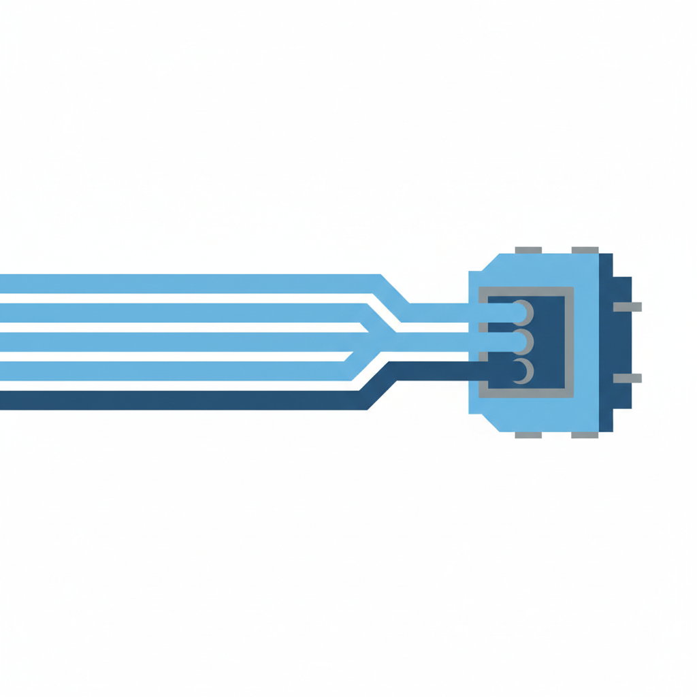

一、同一张脸
打开五家 AI 公司的产品页面，做一个简单的功能清单比对：
聊天对话——五家都有。文件上传和长文档分析——五家都有。代码生成和执行——ChatGPT 有 Codex，Claude 有 Claude Code，Gemini 有 Agent Designer，DeepSeek 有 Coder。实时搜索——四家已上线，第五家在内测。画布/侧边栏编辑——ChatGPT 叫 Canvas，Claude 叫 Artifacts（用户已创建超过 5 亿个），Gemini 叫 Workspace Studio。Agent 自主执行——OpenAI 有 Operator，Anthropic 有 Computer Use，Google 有 Agent Garden。
每一项功能的发布间隔越来越短。2024 年，Claude 推出 Artifacts 后，ChatGPT 用了四个月推出 Canvas。到 2025 年底，这个间隔缩短到了几周。到 2026 年，几乎是同步发布。
当底层都是大语言模型时，能做的事情就那么多。聊天是最自然的交互方式。代码生成是最容易变现的场景。搜索是用户留存的关键。Agent 是下一个增长故事。每家公司都看到了同一张地图，于是走了同一条路。
更微妙的变化发生在模型能力本身。2023 年，GPT-4 和其他模型之间存在肉眼可见的能力断层。到 2026 年，Grok 4 和 Claude Opus 4.6 在编程基准测试中并列领先，Gemini 3.1 Pro 在推理任务中拔得头筹，而 DeepSeek V4 在多数日常任务中的表现与前三者相差不超过 10%。差距仍然存在，但已经小到普通用户无法感知。
这就是问题所在。当用户分不清产品之间的差异时，他们开始用另一个标准来选择。
二、价格悬崖
2026 年 4 月 24 日，DeepSeek 发布 V4 模型。输出价格：每百万 token 3.48 美元（Pro 版），0.28 美元（Flash 版）。
同一时期，OpenAI 的 GPT-5.4 输出价格是每百万 token 30 美元。Anthropic 的 Claude Opus 4.6 是 25 美元。
DeepSeek Flash 的价格是 GPT-5.4 的 1/107。不是便宜一半，不是便宜十倍——便宜了两个数量级。
如果这是任何其他行业，故事到这里就结束了。但 AI 行业的特殊之处在于，DeepSeek 不只是便宜。它的模型权重是开放的，任何企业都可以下载、部署在自己的服务器上，彻底绕开 API 付费。有分析师估算，企业自建 DeepSeek V4 实例后，AI 运营支出下降了 85%-95%。
这不是一个价格战的故事。价格战意味着双方都有利润空间可以压缩。DeepSeek 做的事情更接近于：把水龙头接到了每个人的厨房里。
闭源模型的回应是降价。过去一年，GPT 系列 API 价格累计下降超过 60%。Claude 的 Haiku 模型定价已经进入"几乎免费"区间。但这解决不了根本问题——你无法在价格上赢过一个免费的对手。
Menlo Ventures 的一份报告指出，到 2025 年底，Google、OpenAI 和 Anthropic 三家控制了企业 AI 市场 370 亿美元中的近 90%。但控制市场份额和赚到钱是两件事。OpenAI 2026 年的预计亏损是 140 亿美元。它正在以人类商业史上最快的速度烧钱，同时寻求 1000 亿美元的新一轮融资，估值目标 8300 亿。
一家年亏 140 亿的公司值 8300 亿——这个等式成立的前提是：大模型不会变成水电煤。但 DeepSeek V4 的发布被一位分析师称为"当前 AI 经济模型的灭绝级事件"。当一个开源模型用 1/100 的价格提供 90% 的能力，闭源 API 的利润率就像一块正在融化的冰。
三、应用层陷阱
面对模型能力趋同和价格塌方，大模型公司的集体回应是：向上走。做应用。
如果底层模型赚不到钱，就在模型之上建产品。于是 OpenAI 做了搜索（直接对标 Google），做了 Operator（一个能帮你在浏览器里订机票填表格的 Agent），做了 Codex（独立的代码工程 Agent）。Anthropic 做了 Claude Code（一个终端里运行的编程助手，已经是公司增长最快的产品，年化收入 25 亿美元），做了 Computer Use（让 AI 直接操控你的电脑屏幕）。Google 做了 Agent Garden、Agent Designer、Workspace Studio。
每家公司都在讲同一个故事：我们不只是一个模型，我们是一个平台。
但这里有一个悖论：大模型公司每做一个新应用，就多证明了一次底层模型是可替换的。
当 Anthropic 把 Claude Code 做成一个出色的编程工具时，它证明了什么？证明了"好的编程体验"取决于产品设计、上下文管理、工具集成——而不是哪个模型在底层运行。如果明天把 Claude Code 的底层换成 DeepSeek V4（假设能力足够），用户体验会有多大变化？可能比大多数人想象的要小得多。
OpenAI 的 Operator 更能说明问题。它本质上是一个浏览器自动化工具，恰好用了 GPT 作为决策引擎。但浏览器自动化的核心技术——DOM 解析、动作序列规划、错误恢复——和具体是哪个大模型关系不大。任何足够好的模型都能做决策引擎。
这就是应用层陷阱：你越是在模型之上构建精巧的产品，你就越是在向世界展示——模型本身只是一个可替换的零件。
Brookings 研究所今年初的一篇分析直接点出了这个问题："当 AI 公司与自己的客户竞争时会发生什么？"大模型公司做搜索，就是在和 Google 竞争。做代码助手，就是在和 GitHub Copilot、Cursor 竞争。做办公协作，就是在和 Notion、飞书竞争。但这些应用公司有一个大模型公司没有的东西：用户数据和行业 know-how。
Notion 知道你的笔记习惯，Salesforce 知道你的客户关系。这些数据构成的护城河，不是换一个更聪明的模型就能跨越的。而大模型公司做的通用应用——聊天、搜索、代码——恰恰是最没有数据壁垒的品类。
四、电信公司的镜子
1995 年，AT&T 是美国市值最高的公司之一。它拥有最先进的通信基础设施、最大的用户基数、最强的技术研发能力（贝尔实验室）。没人怀疑通信行业的未来属于它。
接下来的十五年里发生了什么：通信技术越来越强（从 2G 到 3G 到 4G），网络容量越来越大，覆盖越来越广——而电信公司的利润率持续下滑。用户不愿意为"更快的网速"额外付费，因为"够用的网速"已经很便宜了。真正赚到钱的是在通信基础设施之上建应用的人——Google、Facebook、Netflix、Uber。
AT&T 也试过"向上走"。它收购了时代华纳，做流媒体，试图从管道公司变成内容公司。结果三年后亏损数百亿，剥离了所有媒体资产，重新缩回管道。
历史的教训很一致：基础设施提供商做应用，几乎从未成功过。电力公司没有发明电冰箱。电信公司没有做出社交网络。云计算厂商没有长出 SaaS 巨头。原因不是它们缺乏技术或资金——AT&T 什么都不缺——而是基础设施思维和应用思维是两种根本不同的组织能力。
现在看看大模型公司在做什么。OpenAI 在做消费应用（ChatGPT 的 5 亿月活是它最大的资产）。Anthropic 在做开发者工具。Google 在做企业 Agent 平台。它们都在试图证明自己不只是一个模型提供商。
但市场已经开始给出答案。Anthropic 的营收超过 OpenAI 的消息传出后，华尔街最关注的不是"谁的模型更好"，而是"谁烧钱更少"。Anthropic 训练模型的开销大约是 OpenAI 的四分之一。在一个利润率正在归零的行业里，这才是真正的竞争优势——不是更聪明，而是更便宜。
四家科技巨头（Microsoft、Amazon、Alphabet、Meta）今年在 AI 基础设施上的预算总计 7250 亿美元，相当于全球 GDP 的 1%。这个规模已经超出了"技术竞赛"的范畴——这是一场资本竞赛。而资本竞赛的终局，从来都是寡头垄断加微薄利润。

五、赢家不在牌桌上
如果大模型注定变成水电煤，那么谁在这场变局中获益？
答案藏在一组对比里。2026 年第一季度，AI 相关并购交易总额达到 1.2 万亿美元的历史新高。但被收购的不是大模型公司——没有人买得起 8000 亿估值的 OpenAI。被收购的是垂直应用公司：法律 AI、医疗影像 AI、工业质检 AI、金融合规 AI。这些公司的共同特点是：它们的核心资产不是模型，而是数据和行业流程。
Morningstar 最近评估了 27 家"不会被 AI 吞噬"的宽护城河公司。名单里没有任何一家大模型公司。入选的是软件巨头、数据垄断者、网络效应平台——它们使用 AI 作为后端能力，但从不把"我们有 AI"当成卖点。
这指向一个简单但常被忽略的逻辑：当电变得便宜到不值一提的时候，赢家不是发电厂，而是任何用电的人。GE 靠电冰箱赚的钱，远远超过它靠卖电赚的钱。
对 AI 行业而言，这意味着价值正在从模型层向两个方向迁移。往下走，流向芯片和基础设施——Nvidia 单季度营收 670 亿美元，比所有大模型公司加起来都多。往上走，流向拥有场景和数据的应用公司。"AI Wrapper"（用 AI API 包一层壳的创业公司）正在大规模死亡，因为大模型公司自己就在做同样的事。但那些把 AI 嵌入到自己无法替代的业务流程中的公司，反而因为 AI 成本下降而获得了更大的利润空间。
现实已经在给这个判断标价：模型提供商的推理利润率正在趋近于零，价值在向应用层或芯片层集中，而不是留在模型提供商手里。
六、尾声
回到开头的那个场景。你打开 Claude，打开 ChatGPT，分不清谁是谁。
这个小小的困惑里藏着整个行业的命运。当产品长得一样，模型能力差不多，价格在 DeepSeek 的压力下持续崩塌——那些花了数百亿美元训练模型的公司，最终卖的到底是什么？
不是智能。智能已经或即将变成大宗商品。
不是品牌。没有人会对自来水公司产生品牌忠诚。
也许是信任，也许是合规，也许是"足够好加足够方便"的那个交叉点。但这些听起来更像是公用事业公司的竞争策略，而不是科技公司的。
OpenAI 2026 年亏了 140 亿美元，但它正在以 8300 亿的估值融资。这笔赌注押的不是今天的 ChatGPT，而是一个假设：总有一天，模型能力会出现质的飞跃，重新拉开差距，让"谁的 AI 更聪明"重新变得重要。
也许它是对的。也许 AGI 真的会在 2027 年出现，让一切推导失效。
但如果它没有出现呢？
那么我们正在目睹的，就是人类历史上最昂贵的一次基础设施化：几千亿美元的投入，最终生产出一种每个人都用得起、没人愿意多付钱的东西。就像电。就像宽带。就像自来水。
对于那些想从 AI 中获益的人，这其实是个好消息。你不需要发明电，你只需要想清楚用电做什么。